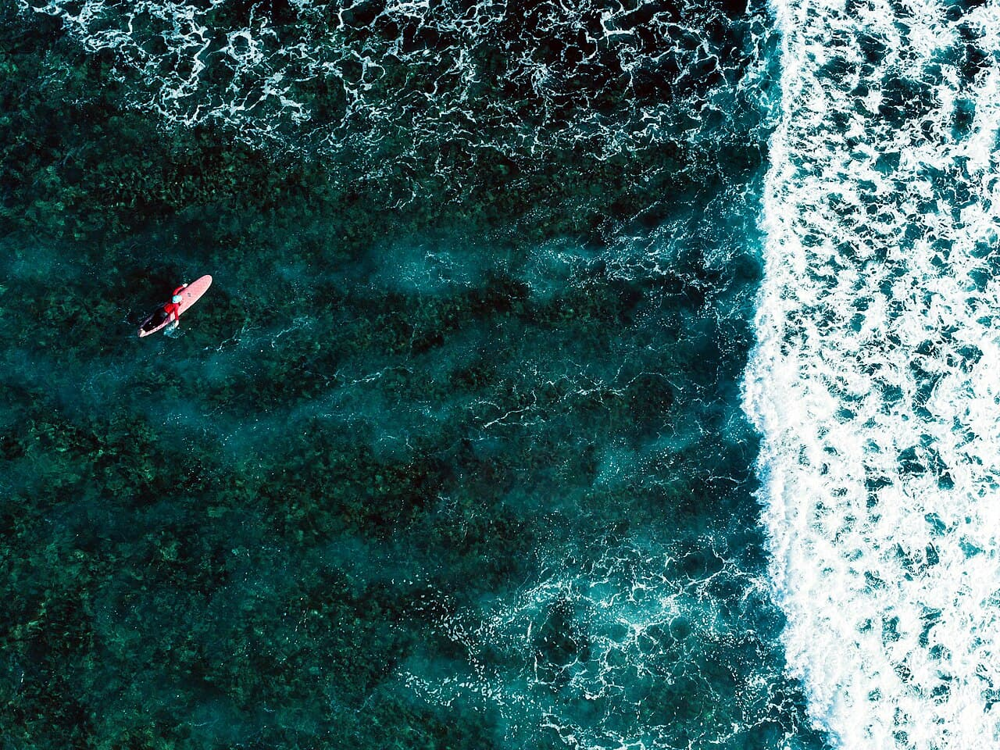

Cloud 9 — Siargao
Philippines · surf

Le tube de droite légendaire des Philippines, sur un récif au bout d'un ponton de bois.
- Lieu
- Philippines
- Niveau
- Expert
- Activités
- surf
- Type d'eau
- Mer / océan
- Coordonnées
- 9.81, 126.17 (position approximative du secteur)
Dangers à connaître
- Récif peu profond.
- Tube puissant.
Le conseil d'Ocean Buddy
Tube parfait mais sur reef ; niveau confirmé requis.
Ouvrir dans Ocean Buddy Télécharger sur l'App Store
Source : Description historique Ocean Buddy · vérification externe en attente.